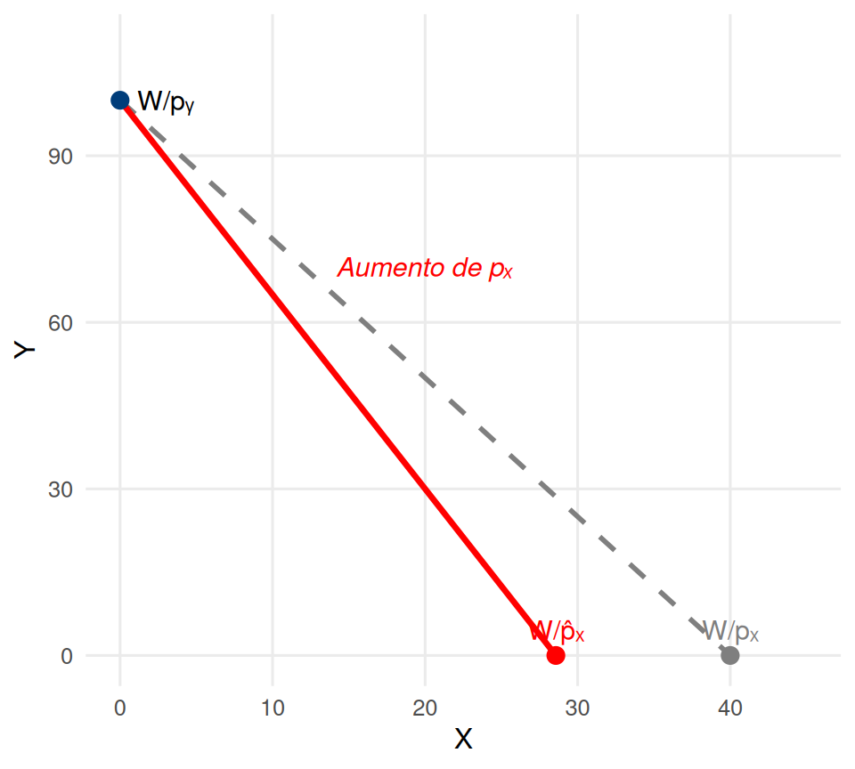
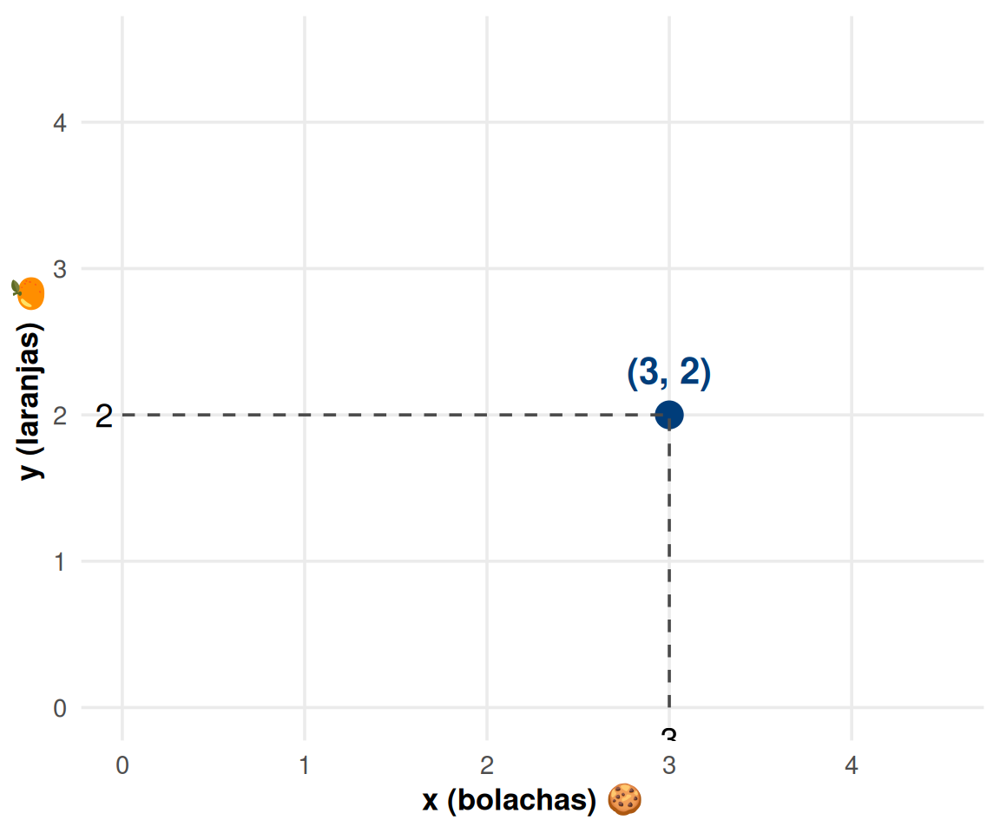
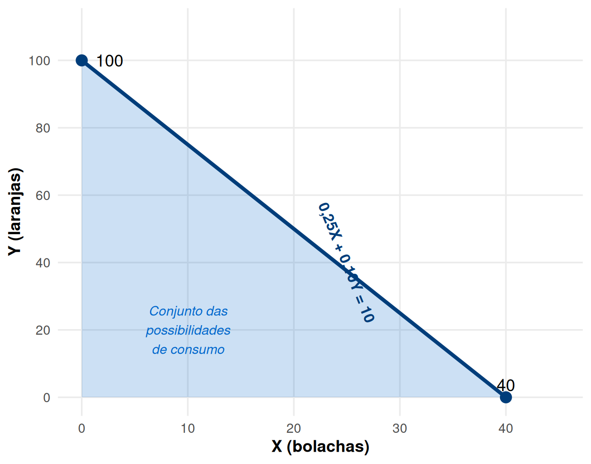
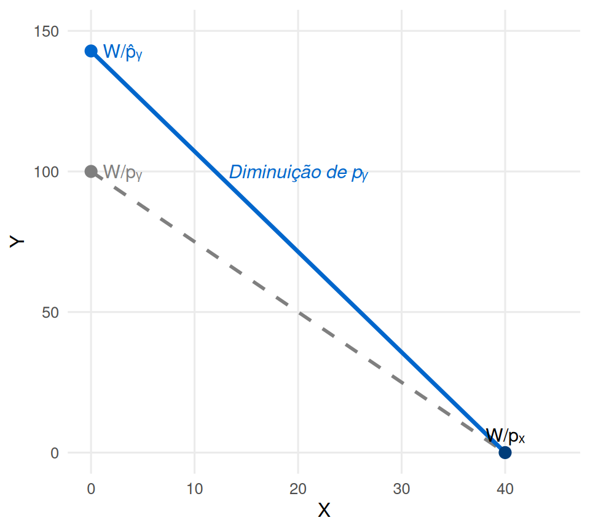
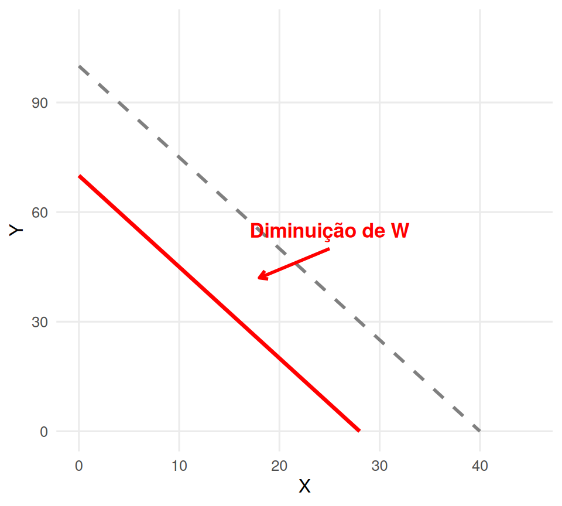
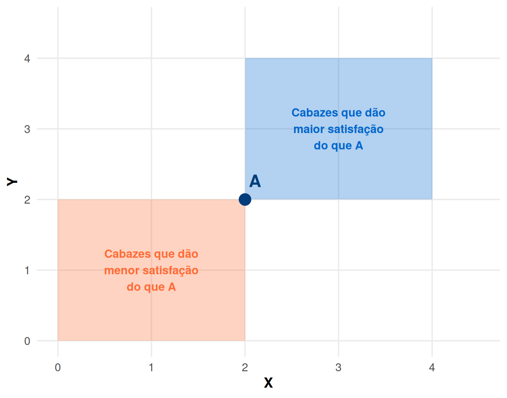
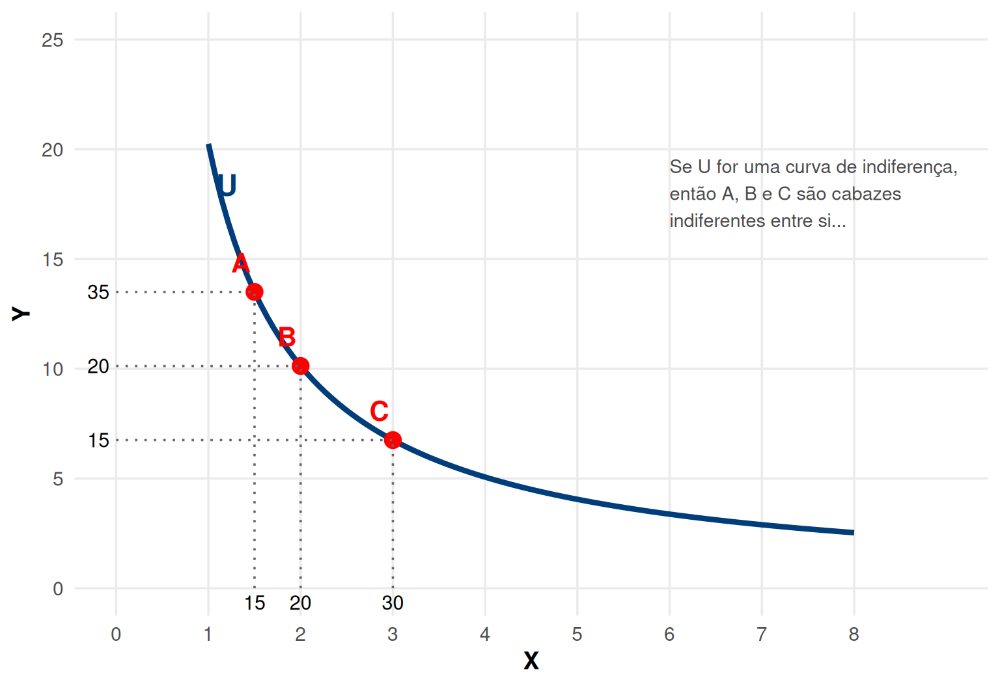

Microeconomia
Aula 6: Preferências e Axiomas de Racionalidade
ISCAL - IPL
Objetivos da Aula 🎯
Nesta aula iremos estudar:
- O conceito de cabaz de consumo
- A restrição orçamental do consumidor
- Efeitos de alterações de preços e rendimento
- Axiomas de racionalidade das preferências
- Curvas de indiferença e suas propriedades
- Início da teoria do consumidor racional
Linguagem: Cabaz de Bens 🛒
Cabaz de Bens
É composto por quantidades de vários bens. Quando se comparam cabazes, os bens são os mesmos, mas as quantidades de cada um variam…
Exemplo: Admitamos dois bens: - Laranjas (\(y\)) 🍊 - Bolachas de chocolate (\(x\)) 🍪
O cabaz \((3,2)\) é composto por 3 bolachas e 2 laranjas.
Graficamente, é um ponto no espaço \((x,y)\).
Representação Gráfica de um Cabaz 📊
Conjunto das Possibilidades de Consumo 🎯
É o conjunto de todos os cabazes que podem ser adquiridos com um dado orçamento
O conjunto de cabazes cuja despesa esgota o orçamento designa-se “Restrição Orçamental”
Problema do consumidor: escolher o melhor cabaz dentro das suas possibilidades
Problema do Consumidor 🤔
De entre os cabazes disponíveis no Espaço das Possibilidades de Consumo, encontrar a escolha ótima, dadas as variáveis exógenas:
Orçamento (\(W\)) 💰
Preços de mercado (\(p_x, p_y\)) 💵
Preferências do consumidor 😊
O consumidor irá, portanto, decidir o valor para as variáveis endógenas \(X\) e \(Y\) — as suas variáveis de decisão!
Restrição Orçamental 💰
Equação da Restrição Orçamental: \[X p_x + Y p_y = W\]
Exemplo: €10 para gastar em bolachas e laranjas
- Cada laranja custa 10 cêntimos (\(p_y = 0{,}10\))
- Cada bolacha custa 25 cêntimos (\(p_x = 0{,}25\))
A restrição orçamental será: \[0{,}25 X + 0{,}10 Y = 10\]
Representação Gráfica da Restrição Orçamental 📈
A Restrição Orçamental também pode ser descrita como: \(Y = 100 - 2{,}5X\)
Alteração do Preço de X 📉📈
Aumento do preço de X:
Diminuição do preço de Y:

- Aumento de \(p_x\): a restrição roda para dentro no eixo X
- Diminuição de \(p_y\): a restrição roda para fora no eixo Y
Alteração do Rendimento 💵
Diminuição do rendimento:

Aumento do rendimento:

Alterações no rendimento provocam deslocações paralelas da restrição orçamental (o declive mantém-se!)
Declive da Restrição Orçamental 📐
\[X p_x + Y p_y = W \quad \Leftrightarrow \quad Y = {\color{red}\frac{W}{p_y}} - {\color{blue}\frac{p_x}{p_y}}X\]
\(\frac{W}{p_y}\): Ordenada na Origem (máximo de Y que pode comprar)
\(-\frac{p_x}{p_y}\): Declive (termos de troca no mercado)
No nosso exemplo: \[0{,}25X + 0{,}10Y = 10 \quad \Leftrightarrow \quad Y = {\color{red}100} - {\color{blue}2{,}5} X\]
- Ordenada na origem: 100 laranjas
- Declive: -2,5 (para ter 1 bolacha a mais, abdico de 2,5 laranjas)
Escolha Ótima do Consumidor 🎯
Do conjunto das possibilidades de consumo, escolher o cabaz ótimo \((x,y)\) em função de:
Variáveis exógenas: preços e rendimento 💰
Preferências do consumidor 😊
- Para tal, precisamos da axiomática de preferências!
Axioma 1: Desejabilidade (Não Saciedade) 🔼
Desejabilidade ou Não Saciedade
Consumir mais é melhor — o consumidor prefere sempre cabazes com maior quantidade de bens.
Exemplo: O consumidor prefere o cabaz \(A=(25,30)\) ao cabaz \(B=(20,20)\) simplesmente porque o cabaz \(A\) contém mais quantidade (para ambos os bens) do que o cabaz \(B\).
Desejabilidade: Representação Gráfica 📊
E se um cabaz tem mais de um bem e menos do outro? 🤔
Qual é o preferido: \((20,30)\) ou \((30,20)\)? 🍊🍪
É preciso saber quais são os cabazes indiferentes entre si…
Quantas laranjas está o consumidor disposto a abdicar, para ter mais uma bolacha de chocolate e ficar indiferente?
- A resposta não depende do que pode comprar (orçamento)
- Depende apenas das suas preferências!
Curva de Indiferença 📈
Curva de Indiferença
Conjunto dos cabazes indiferentes entre si — que proporcionam o mesmo nível de satisfação ao consumidor!
- Devido à hipótese de desejabilidade, os cabazes indiferentes entre si:
- Não podem conter mais quantidade de ambos os bens
- Não podem conter menos quantidade de ambos os bens
- Têm de conter sempre mais de um e menos do outro
- Logo, no espaço XY, a curva de indiferença tem de ter inclinação negativa! ⬇️
Curva de Indiferença: Representação Gráfica 📊
Exercícios de Aplicação 📝
Exercício 1 (Escolha Múltipla)
Um consumidor tem um orçamento de €100 para gastar em livros (L) e filmes (F). Se o preço dos livros é €20 e o preço dos filmes é €10, qual é a equação da restrição orçamental?
- \(20L + 10F = 100\) ✓
- \(10L + 20F = 100\)
- \(L + F = 100\)
- \(20L = 10F + 100\)
Solução: A restrição orçamental é sempre \(p_L \cdot L + p_F \cdot F = W\), logo \(20L + 10F = 100\).
Exercícios de Aplicação 📝
Exercício 2 (Escolha Múltipla)
Se o preço dos livros aumentar para €25 (mantendo tudo o resto constante), o que acontece à restrição orçamental?
- Desloca-se paralelamente para fora
- Roda no eixo dos filmes, tornando-se mais inclinada ✓
- Roda no eixo dos livros, tornando-se menos inclinada
- Não se altera
Solução: Com \(p_L = 25\), o máximo de livros diminui de 5 para 4 (\(100/25=4\)). O máximo de filmes mantém-se em 10. A reta roda no eixo Y (filmes) e fica mais inclinada.
Exercícios de Aplicação 📝
Exercício 3 (Desenvolvimento)
Maria tem €150 para gastar em camisolas (C) e calças (P). O preço das camisolas é €15 e o preço das calças é €30.
Escreva a equação da restrição orçamental.
Qual é o máximo de camisolas que pode comprar? E de calças?
Qual é o declive da restrição orçamental? O que significa este valor?
Se o rendimento de Maria aumentar para €180, qual será a nova restrição orçamental? Represente graficamente as duas restrições.
Soluções:
a) \(15C + 30P = 150\)
b) Máx. camisolas: \(150/15 = 10\); Máx. calças: \(150/30 = 5\)
c) Declive \(= -p_C/p_P = -15/30 = -0{,}5\). Para ter 1 calça a mais, abdica de 0,5 camisolas (ou 2 camisolas por calça).
d) Nova restrição: \(15C + 30P = 180\). As retas são paralelas (mesmo declive).
Resumo da Aula 📚
Um cabaz é uma combinação de quantidades de bens, representado como um ponto no espaço
A restrição orçamental (\(Xp_x + Yp_y = W\)) define o conjunto de cabazes acessíveis
O declive da restrição orçamental é \(-\frac{p_x}{p_y}\) (termos de troca)
Alterações de preços fazem rodar a restrição; alterações de rendimento deslocam-na paralelamente
Axioma da Desejabilidade: consumir mais é sempre melhor
Curva de indiferença: conjunto de cabazes que proporcionam o mesmo nível de satisfação
Curvas de indiferença têm inclinação negativa (devido à desejabilidade)
Próxima aula: Taxa Marginal de Substituição, mais axiomas e o ótimo do consumidor! 🎯

Microeconomia (Plano de Transição)